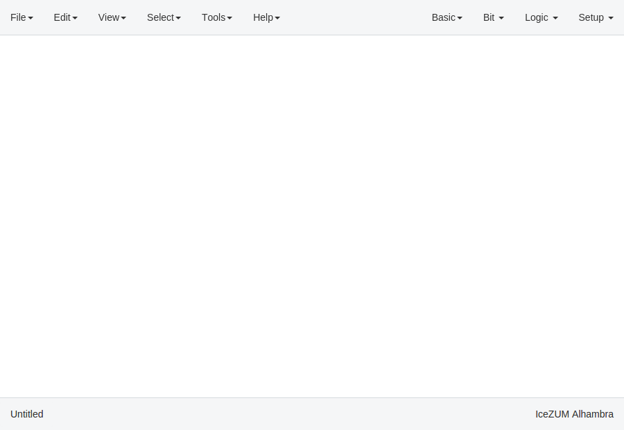
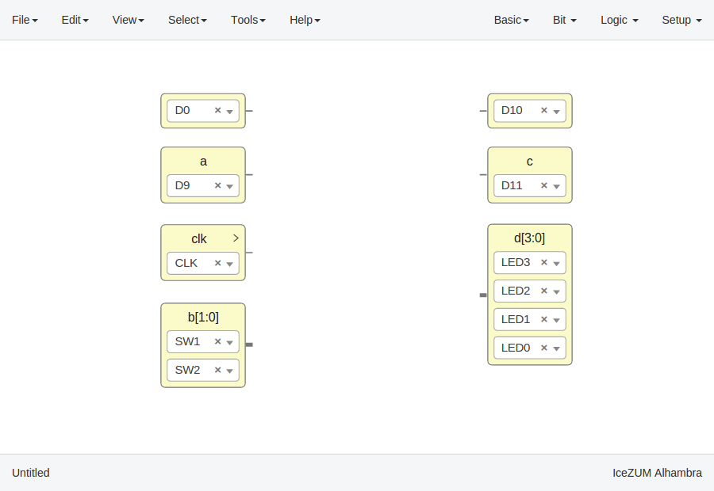
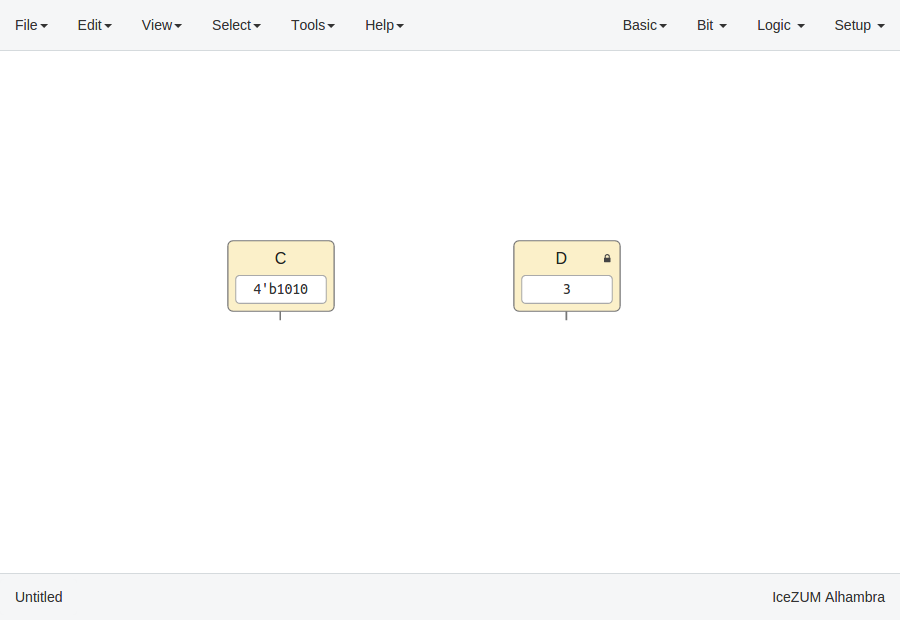
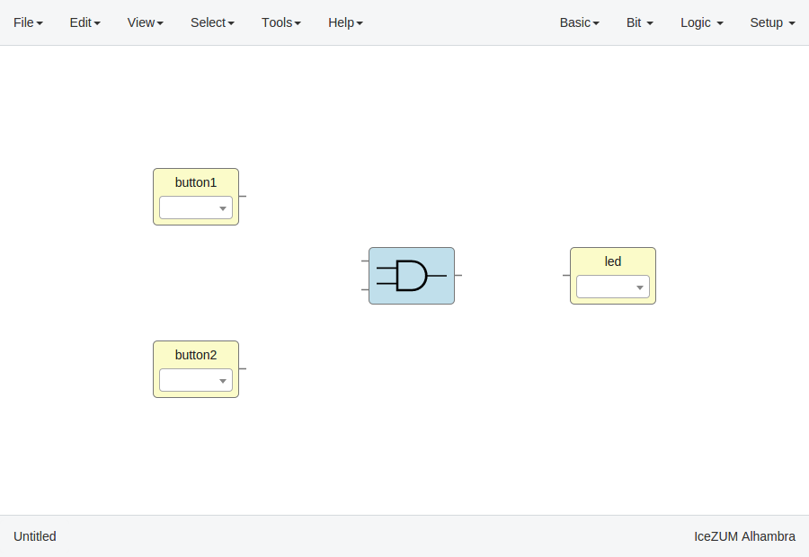

Create a project¶
Create a new project
Go to Edit > New. A new window will be opened.
Add blocks
There are different types of blocks:
Input/Output blocks
Click on Basic > Input or Basic > Output, write the block's name and press OK or Enter.
Also, it can be configured as buses using the
[x:y]notation (xis the most significant bit).If these blocks are used to build generic blocks, they should be configured as virtual (green). Then, the FPGA pin selector won't be shown.

Constant blocks
Click on Basic > Constant, write the block's name and press OK or Enter.
These blocks can be configures as local. Then, this parameter won't be exported.
Memory blocks
Click on Basic > Memory, write the block's name and press OK or Enter.
These blocks can be configures as local. Then, this parameter won't be exported. Also you can update the address format of the memory to be binary, decimal or hexadecimal.

Code blocks
Click on Basic > Code, add the code ports. Port names are separated by a comma. E.g.:
a, b.
This block contains a text editor to write your module in verilog code. Module header and footer are not required.

Info blocks
Click on Basic > Info.
This block contains a text editor to add comments about the project in Markdown or HTML.
It can be rendered simply by double-clicking the block.

Bit blocks
Click on Bit > 0 or Bit > 1.
These blocks are low and high logic drivers.
Logic blocks
Go to the Logic menu and select a block. This menu contains Gates, Combinational blocks and Sequential blocks.

Setup blocks
Click on Setup > Pull up or Setup > Tri-state.
The Pull up block must be connected to input ports in order to configure a pull up in the FPGA.
In this example we are going to implement an AND logic gate with its input/output pins connected to the FPGA I/O.
Connect the blocks


{kind=link}
{kind=link}
{kind=link}
{kind=link}
{kind=link}
{kind=link}
{kind=link}
{kind=link}
{kind=link}
{kind=link}